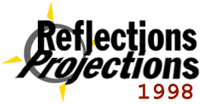
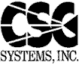

The Association for Computing Machinery at the University of Illinois (ACM@UIUC) is hosting its fourth annual student computing conference on October 2-4 of this year. Registration for the conference is open to anyone and everyone who is interested in cutting edge computing technology. No university or ACM affiliation is required.The purpose of Reflections | Projections is to bring students from all over the country together to gain a broader perspective on the field of computer science. Our goal is to expose our attendees to things that they would not experience in a classroom. It's also a weekend of fun, food, and coding!
The conference begins on October 2 with a job fair. Our 30 corporate sponsors will be recruiting for summer, coop, and permanent positions. Be sure to bring your resume!
All of the technical presentations will take place on Saturday and Sunday (October 3-4). There will be about 14 sessions over the two days. Bjarne Stroustrup, the creator of C++, will deliver the keynote address on Saturday afternoon.
If you know C++ and you like to code, take a look at MechMania. Our AI programming contest begins Friday night and culminates Sunday afternoon with the MechMania Main Event! Teams of 2-3 programmers will compete for galactic conquest.
To get information about past conference and the history of Reflections | Projections or for our contact information, see the about page.
For a schedule of conference activities, as well as information on conference speakers and presentations, look at the events page.
Details about Champaign-Urbana, from maps to lodging, can be found in the information section.
Online registration is available now!
If you are interested in becoming a corporate sponsor or you would like to recruit at our job fair, please take a look at the corporate information pages.
Reflections | Projections 1998 is sponsored by these and other organizations:




Last updated 10.01.98 by Valerie Franek, franek@uiuc.edu.